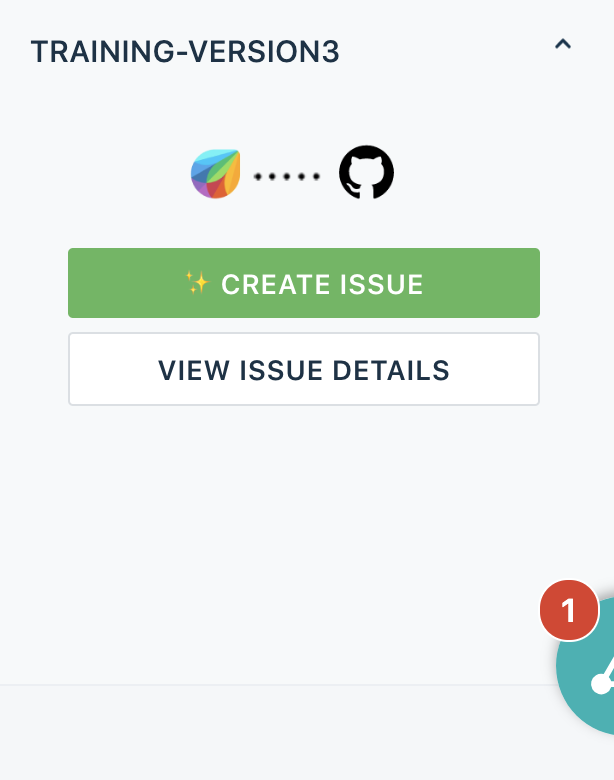
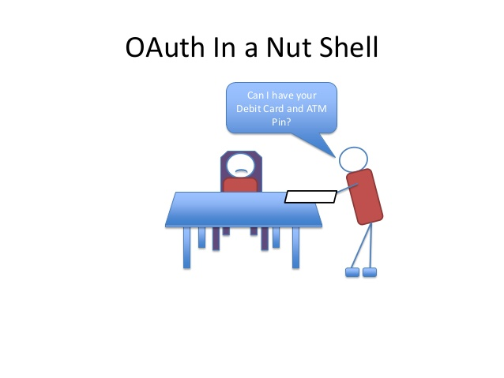
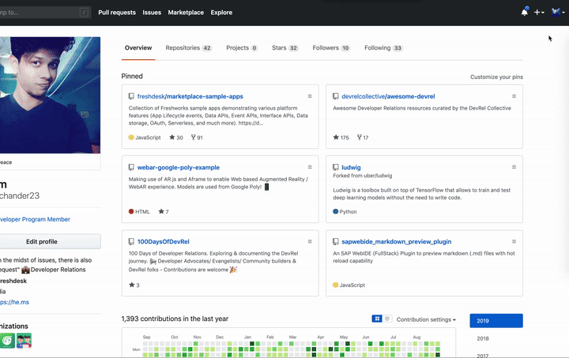
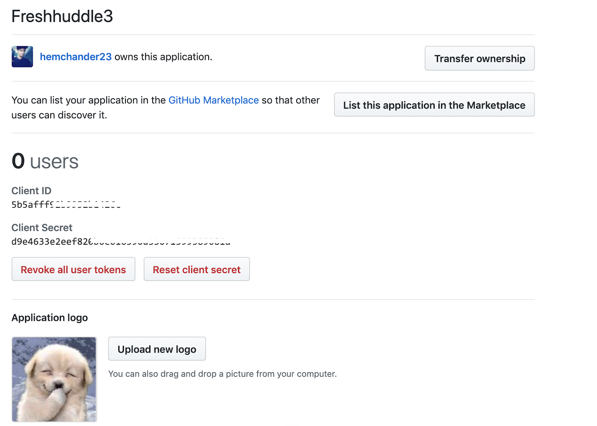
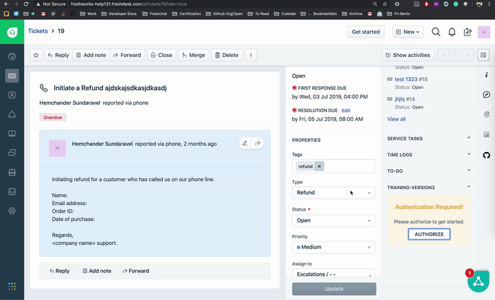
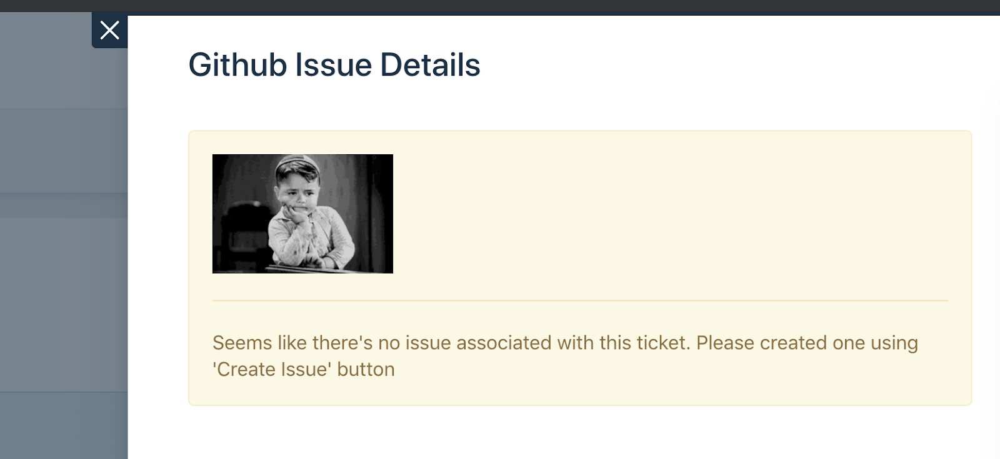

In this tutorial, we will create a simple app that integrates with Github and lets us create issues for Freshdesk tickets. We will also learn some of the frequently used platform's features like Request API, Data Storage, Notifications, OAuth, Installation Parameters, UI Modals/Dialogs along the way! These features will come in handy when you are creating an amazing app for our Freshworks Products.
⭐️What we will learn:
- Making API calls from our app and securing it with OAuth
- Creating a Github issue from Freshdesk
- Avoiding duplication using data storage
- Displaying the issue in our app using Modals and Data storage APIs
Before we dive-in, ensure that you have the following:
- FDK setup following the quick start guide.
- Clone the repo https://github.com/hemchander23/fh3/
- Trial Freshdesk account
- A Github account
If you navigate to template.html, you'll notice that we have a very simple UI built using Bootstrap v3.3 and has the product (Freshdesk) stylesheet. Basically, it looks like this:

The ‘Create Issue' button would let us create an issue and ‘View issue details' allows us to view the created issue. This is a simple sidebar app and you have several other placeholders in the product (Full page, background, CTI etc).
app/template.html
<html>
<head>
<script src="https://ajax.googleapis.com/ajax/libs/jquery/3.2.0/jquery.min.js"></script>
<script src="https://static.freshdev.io/fdk/2.0/assets/fresh_client.js"></script>
<script src="app.js"></script>
<link rel="stylesheet" type="text/css" href="https://static.freshdev.io/fdk/2.0/assets/freshdesk.css">
<link rel="stylesheet" type="text/css" href="style.css">
</head>
<body>
<div class="fw-widget-wrapper">
<div class="row col-xs-12 col-xs-offset-0">
<div class="banner">
<img src="./resources/img/banner.png" width="175px"/>
</div>
<button id="createIssue" type="button" class="btn btn-success btn-block mr-1">
<small>✨Create Issue</small>
</button>
<button id="viewIssue" class="btn btn-default btn-block mr-1">
<small>View Issue Details</small>
</button>
</div>
</div>
</body>
</html>In our tutorial, REST APIs enable communication between the app and Github. This is not only the case for Github but for any third-party communication as well. The Github API documentation clearly specifies where(endpoint) and how to make the API call(headers, payload, etc). Our app needs to adhere to it and provide the payload in that format.
To create an issue in Github, we need to make the following API call with the following payloadPOST /repos/:owner/:repo/issues
Name | Type | Description |
|
| Required. The title of the issue. |
|
| The contents of the issue. |
|
| Login for the user that this issue should be assigned to. NOTE: Only users with push access can set the assignee for new issues. The assignee is silently dropped otherwise. This field is deprecated. |
|
| The |
|
| Labels to associate with this issue. NOTE: Only users with push access can set labels for new issues. Labels are silently dropped otherwise. |
|
| Logins for Users to assign to this issue. NOTE: Only users with push access can set assignees for new issues. Assignees are silently dropped otherwise. |
Usually in front-end apps, making API calls is a challenge especially when it is to be secured. To secure API calls and to solve other issues like CORS, templating for keys/tokens, we make use of Request API and iparams
The following snippet shows the iparam definition in the config/iparams.json file
{
"github_repo": {
"display_name": "Github Repo Name : ",
"description": "Enter the Github Repository name Ex: githubhandle/reponame",
"type": "text",
"required": true,
"secure": true
}
}The Request API call from our app looke like this. Notice how we made use of iparam templating to substitute the repo name
app/app.js
client.request.post(`https://api.github.com/repos/<%= iparam.github_repo %>/issues`, options)
.then(function (data) {
// TODO : Add try catch block
response = JSON.parse(data.response);
var ticketObj = { ticketID: ticketData.ticket.id, issueID: response.id, issueNumber: response.number };
setData(ticketObj);
})
.catch(function (error) {
console.error("error", error);
});We are not done yet! Until now we have seen the structure of Request API and how it can be used with iparam templating to make a call. If we use basic authentication or keys, we can make similar use of iparams in setting the header values (in options object of the Request API - which we will see shortly). In our case, we want to secure the API calls using OAuth, let's see how it can be done with Request API with a short primer about OAuth.
OAuth stands for Open Authorization. It is an open standard for authorization delegation. Commonly used as a way for Internet users to grant websites or applications access to their information on other websites but without giving them the passwords.

You can read more about configuring OAuth over here https://developers.freshdesk.com/v2/docs/oauth/#configure. Let's proceed to create a Github app that would provide us the client_id and client_secret to enable OAuth in our app. While creating the app, make sure you provide the redirect URL for your app in the third-party developer portal (Github) with the following values.
- Testing: http://localhost:10001/auth/callback
- Production: https://oauth.freshdev.io/auth/callback

Once the app is created, obtain the Client ID and Client Secret and add them to the oauth_config.json along with authorization and token URLs. You can refer the Github developer docs over here for reference
https://developer.github.com/apps/building-oauth-apps/authorizing-oauth-apps/

Our oauth_config.json should look like this
config/oauth_config.json
{
"client_id": "5b5ablababalbalbalbalbalb1426c",
"client_secret": "d9e4633e2blabalbalbalbalbalbal33071399389081a",
"authorize_url": "https://github.com/login/oauth/authorize",
"token_url": "https://github.com/login/oauth/access_token",
"options": {
"scope": "repo"
},
"token_type": "agent"
}Once you have the above steps done, it is time to modify the options parameter of the Request API call. Note that the access_token is not an iparam and will be automatically substituted after authorization
app/app.js
/**
* Makes an API call to Github to create an issue from the ticket
* @param {object} ticketData Ticket data
*/
function createIssueHelper(ticketData) {
var options = {
headers: {
"Authorization": 'token <%= access_token %>',
"User-Agent": 'FreshHuddle Sample User Agent'
},
body: JSON.stringify({
"title": ticketData.ticket.subject,
"body": ticketData.ticket.description_text
}),
isOAuth: true
};
client.request.post(`https://api.github.com/repos/<%= iparam.github_repo %>/issues`, options)
.then(function (data) {
// TODO : Add try catch block
response = JSON.parse(data.response);
var ticketObj = { ticketID: ticketData.ticket.id, issueID: response.id, issueNumber: response.number };
setData(ticketObj);
})
.catch(function (error) {
console.error("error", error);
})
}
Once the configurations are done, run the app using the fdk run command. This will show the following message requesting for authorization


Once the app is approved, you will be redirected back and you'll see this
Now that we are able to authenticate with Github, we shall see how we can create an issue in Github.
The createIssueHelper() method lets us create an issue in Github based on the ticket data. Here's a quick preview of how it looks like. By now you'd have identified by the yellow warning box there's some other feature used in the app as well.

A corresponding Github issue is also created in the repo that we mentioned in the iparams

As it would seem evident from the title, we might run into a situation where we keep creating issues upon pressing the ‘Create Issue' button. To avoid duplicates, we can make use of the Data Storage feature in our app.
A simple method is to maintain a record for a ticket if an issue is successfully created. Upon further creation, a check is always made if there's a record that exists already. If it exists, the issue is not created. If not, create one.
Data storage allows us to achieve two things at the same time. It avoids duplication and allows us to cache or fetch the previously persisted issue details in an instant.
app/app.js
/**
* Create a Github Issue
*/
function createIssue() {
console.log("Proceeding to create issue from the ticket");
getTicketDetails(function (ticketData) {
console.log(ticketData);
checkAndCreateIssue(
ticketData.ticket.id,
function () {
// The record already exists - indicates it is already associated with Github issue
showNotification('warning', 'Hold on 🙅🏻♂️', 'A Github issue has been already created for this ticket. Click on \'View Issue Details\' button');
},
function (error) {
//404 - Indicates that the record is not found in the data storage
if (error.status === 404) {
createIssueHelper(ticketData);
}
})
}, function (error) {
console.error("Error occurred while fetching ticket details", error);
});
}/**
* Store Github issue data using data storage API
* @param {array} data Issue array to be set in data storage
*/
function setData(data) {
var dbKey = String(`gitissue:${data.ticketID}`).substr(0, 30);
client.db.set(dbKey, { issue_data: data })
.then(function () {
showNotification('success', 'Yay 🎉', 'A Github issue is successfully created for this ticket')
})
.catch(function (error) {
console.error("Unable to persist data : ", error);
});
}You can use Interface APIs to trigger user interface actions on a page. With these APIs, an app can control the visibility of ticket properties, hide or disable buttons, and show dialog boxes and notifications.
For our app, we will make use of Modals to show the ticket details.
/**
* Function to View issue in the modal, Passes ticket as an object to the modal, can be fetched in the modal using Instance API
*/
function viewIssue() {
getTicketDetails(function (data) {
client.interface.trigger("showModal", {
title: "Github Issue Details",
template: "./modal/modal.html",
data: data.ticket
});
}, function (error) {
console.error(error);
});
}The modal.html is the html file that shows the ticket details. Modal.js is the javascript file associated with it.
- Get the issue number associated with a ticket.
- Make a GET call to Github using the issue number using Request API
- Show the details by setting the HTML content
/**
* Function to fecth issue from github, authorization is done using Oauth
* @param {string} issueID Issue number to query specific ticket from github
*/
function fetchIssue(issueID) {
var options = {
headers: {
Authorization: 'token <%= access_token %>',
'User-Agent': 'FreshHuddle Sample User Agent'
},
isOAuth: true
};
client.request.get(`https://api.github.com/repos/<%= iparam.github_repo %>/issues/${issueID}`, options)
.then(function (data) {
try {
data = JSON.parse(data.response);
var html = '';
html = `<h3> Issue title : ${data.title} </h3>
<p>Description : ${data.body}</p>
<p> Issue Number : ${data.number}</p>
<p>Issue ID ; ${data.id}</p>
<p> Issue Status : ${data.state}</p>`;
$('#modal').append(html);
} catch (error) {
console.error("Error while attempting to show issue", error);
}
})
.catch(function (error) {
console.error("error", error);
});
}
If there's no issue associated with the ticket, the data storage APIs throw a 404 error status. Upon which we can show the appropriate message.
/**
* Retrieve the issue from data storage
* @param {Number} ticketID Ticket ID
* @param {function} callback Callback function
*/
function getIssue(ticketID,callback) {
var dbKey = String(`gitissue:${ticketID}`).substr(0, 30);
client.db.get(dbKey)
.then(callback)
.catch(function (error) {
//404 - Indicates that the record is not found in the data storage
if (error.status === 404) {
console.error("No issue found for ticket", error);
var html = '';
html = `<div class="alert alert-warning" role="alert">
<img src="https://media.tenor.com/images/a48310348e788561dc238b6db1451264/tenor.gif" width="120px"/>
<hr>
Seems like there's no issue associated with this ticket. Please created one using 'Create Issue' button
</div>`;
$('#modal').append(html);
}
})
}
You can find a lot of sample apps for our Freshworks products at https://github.com/freshdesk/marketplace-sample-apps
Please do provide feedback at https://docs.google.com/forms/d/17mU2WJdB0gkQhjXPmvXbEJy6OLgTeGz8pH7DRI70J6o/edit?ts=5d6fc1ab
Thanks again ♥️